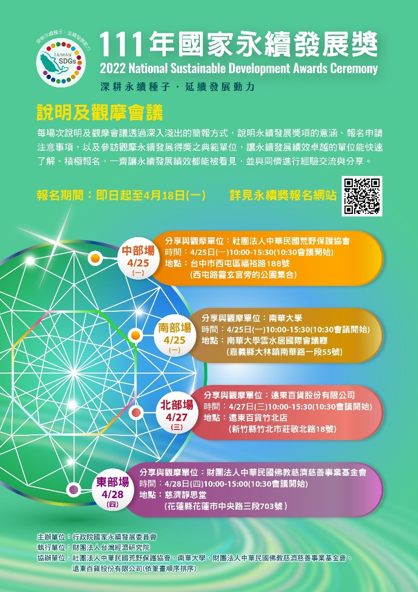

11.09
本年度國家永續發展獎，在全國134個機關團體熱烈報名下，行政院永續發展委員會秘書處自111年6月16日至10月11日間，分別辦理永續獎初選、複選、決選三階段評選會議。經過激烈的競爭下，選出四大類別，共計52個得獎單位，預計12月將由行政院院長親自頒獎(行政院院長兼任永續會主任委員)。恭喜以下得獎單位(依筆畫順序)：
教育類
企業類
民間團體類
政府機關類
08.05
國家永續發展獎初選已於7月29日完成審查，進入複選名單如下（依參選單位名稱筆劃排序）。
永續會秘書處將陸續個別通知進入複選單位，準備複選簡報詢答，感謝全國134個報名單位熱烈參與！
教育類
企業類
民間團體類
政府機關類
06.29
111年國家永續發展獎經過長達三個月的申請，在永續會辦理相關說明觀摩會議及宣導下。參選單位較上屆增加超過一倍之多，尤其企業類共計63個單位報名，為各類別之冠；政府機關也在中央政府與地方政府共襄盛舉之下，共有29個計畫報名；教育類也有24個各級學校報名，連往年報名家數較少的民間團體類，也有18家報名。
為鼓勵各界參與國家永續發展，永續會執行長龔明鑫主委，特別指示今年將得獎名額限制放寬，本年度得獎單位最高可以達報名件數之四成。相信今年各類優秀的參選單位，將有更多的機會榮獲此一殊榮。
永續獎初選審查結果預計於7月底完成，進入複選名單的申請單位，除了個別通知外，全部進入複選名單也將公告於本網站，請大家拭目以待。
05.06
111年國家永續發展獎說明及觀摩會，於4月25-28日辦理完成4場次北中南東分區會議，感謝相關單位熱烈參與。為使大家更明瞭得獎單位推動永續發展成果，永續會秘書處特將觀摩成果剪輯成4支影片，供有意申請國家永續發展獎單位參考其永續政策推動成果。相關申請資訊請至永續獎報名網站：https://ncsdaward.ndc.gov.tw/
03.30
行政院國家永續發展委員會為鼓勵各界積極投入永續發展實踐，每年辦理國家永續發展獎甄選，為了讓各界可以了解如何彙整自己的永續發展績效，申請報名參獎，特辦理北、中、南、東共4場次的「說明及觀摩會議」。
歡迎上網查詢報名資訊
（https://ncsdaward.ndc.gov.tw/home/JoinInfo2）
或洽詢電話（02）2586-5000，轉833、855，由專人為您解說。

03.15
行政院國家永續發展委員會（以下簡稱：本會）為表揚推動永續發展績效卓越單位，以鼓勵全民參與永續發展推動工作，落實永續發展在地化及生活化目標，實現國家永續發展願景，特辦理國家永續發展獎，以表彰其在永續發展之努力與成果。
國家永續發展獎表揚對象共有4個類別，分別為1.教育類2.企業類3.民間團體類4.政府機關類。評選方式依類別分別進行初選、複選及決選三階段選拔。初選為書面審查；複選以召開會議簡報詢答為原則，得視需要實地訪察；決選由參加複選之評選委員依複選結果召開決選會議，遴選各類別得獎單位。
政府已宣示2050淨零排放目標，為鼓勵各界積極投入永續行動，協力達成淨零轉型目標，本獎項擴大給獎，各類別得獎單位最高為該類別參選單位 (計畫)數之四成，以表彰各界對國家永續發展之貢獻。
為讓各界了解報名作業，行政院永續會秘書處，規劃於111年4月下旬舉辦北中南東4場實體或線上參選說明會，並在官網以影片介紹申請流程、內容，歡迎上網查詢報名資訊（國家永續發展獎 https://ncsdaward.ndc.gov.tw）或洽詢電話（02）2586-5000，轉833、855、823，由專人為您解說。